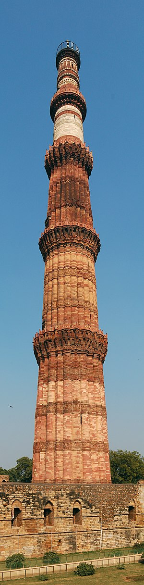
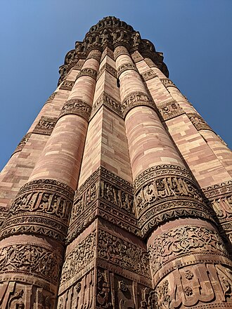

 The tower includes elements of traditional Islamic architecture and southwestern Asian design.Elizabeth Lambourn's Islam Beyond Empires: Mosques and Islamic Landscapes in India and the Indian Ocean studies the introduction of Islam in South Asia and how the region influenced the Islamic religious architecture.These newly arrived Muslims from the Islamic West escaped the Mongol Empire and emigrated to India, where they constructed religious centers. The Qutb Minar serves as a central marker to these new Muslim communities as well as being a reminder of Islam's presence in the area.[15] The architecture of the minaret varies greatly from that of the typical style and design of the mosques constructed in the Middle - East. The style of these structures is influenced by the local architecture such as the Indic temples. This affected the different materials, tech- niques, and decoration that were used in the construction of the Qutb Minar. The tower includes elements of traditional Islamic architecture and southwestern Asian design.Elizabeth Lambourn's Islam Beyond Empires: Mosques and Islamic Landscapes in India and the Indian Ocean studies the introduction of Islam in South Asia and how the region influenced the Islamic religious architecture.These newly arrived Muslims from the Islamic West escaped the Mongol Empire and emigrated to India, where they constructed religious centers. The Qutb Minar serves as a central marker to these new Muslim communities as well as being a reminder of Islam's presence in the area.[15] The architecture of the minaret varies greatly from that of the typical style and design of the mosques constructed in the Middle - East. The style of these structures is influenced by the local architecture such as the Indic temples. This affected the different materials, tech- niques, and decoration that were used in the construction of the Qutb Minar.
The construction of the Qutb Minar was planned and financed by the Ghurids, who emigrated to India and brought Islam with them. The Ghurids, historically known as the Shansabanis, were a clan of Tajik origin that hailed from Ghur, the mountainous region of modern-day western Afghanistan.[22] In the late eleventh century to the early twelfth century, the different sects of this nomadic clan united, losing its nomadic culture. During this time, they also converted to Islam.[22] They then expanded into modern-day India and quickly took control of a substantial part of the country.[22] The Ghurids annexed the Multan and Uch in the western Punjab in 1175–76, the northwestern regions around Peshawar in 1177, and the region of Sindh in 1185–86. In 1193, Qutb al-Din Aibak conquered Delhi and implemented a Ghurid governorship in the province, and the congregational mosque, the Qutb Minar complex, was founded in 1193.[22] In the past, scholars believed that the complex was constructed to promote a conversion to Islam amongst the Ghurids' new subjects as well as a symbol of the Ghurids' adherence to a socio-religious system.[22] There is now new information to suggest that conversion to Islam was not a top priority of the new annexes and instead the Ghurid governors sought to make a synthesis of the local culture and Islam through negotiation.[22]
